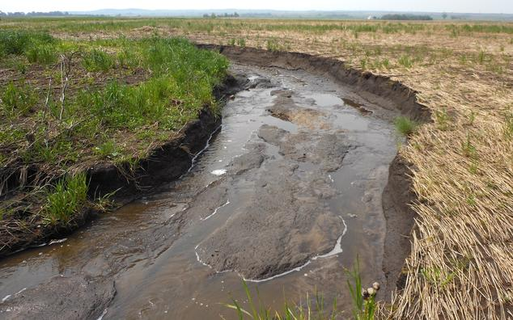
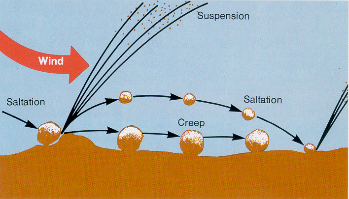
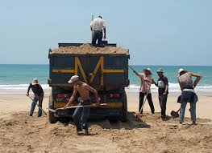

CAUSES
-

Water Erosion
Water erosion is the process by which soil is detached, transported, and deposited by the action of rainfall, runoff, and flowing water. It can manifest as sheet erosion, where thin layers of soil are removed uniformly, gully erosion forming deeper channels, and streambank erosion along riverbanks.
Know More -

Wind Erosion
Wind can transport loose, dry soil particles over long distances, particularly in arid or semi-arid areas with sparse vegetation. Wind erosion is a significant concern in regions where natural vegetation has been removed or disturbed
Know More -

Human Activities
Activities such as deforestation, agricultural practices like overgrazing, improper land use, and construction can accelerate soil erosion. These actions disrupt the natural protective cover of vegetation and disturb the soil structure, making it more vulnerable to erosion
Know More